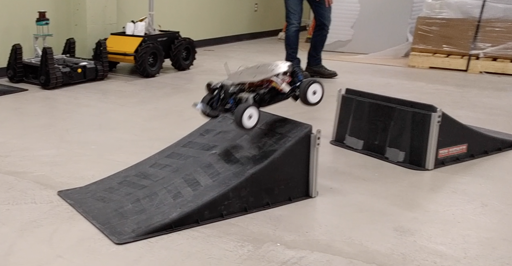

<div class="container">
<div class=row>

<div class="col-6">

<h1> Introduction </h1>

<p>If mobile robots are to become ubiquitous, we must first solve fundamental problems in perception. Before a mobile robot system can act intelligently, it must be given – or acquire – a representation of the environment that is useful for planning and control. Perception comes before action, and the perception problem is one of the most difficult we face.</p>

<p>We study probabilistic perception algorithms and estimation theory that enable long-term autonomous operation of mobile robotic systems, particularly in unknown environments. We have extensive experience with vision based, real-time localization and mapping systems, and are interested in fundamental understanding of sufficient statistics that can be used to represent the state of the world.</p>

<p>An important goal in mobile robotics is the development of perception algorithms that allow for persistent, long-term autonomous operation in unknown situations (over weeks or more). In our effort to achieve long-term autonomy, we have had to solve problems of both metric and semantic estimation. We use real-time, embodied robot systems equipped with a variety of sensors – including lasers, cameras, inertial sensors, etc. – to advance and validate algorithms and knowledge representations that are useful for enabling long-term autonomous operation.</p>
</div>

<div class="col-6 d-flex align-items-center">

</div>

</div>
</div>

{% include projects.html %}


